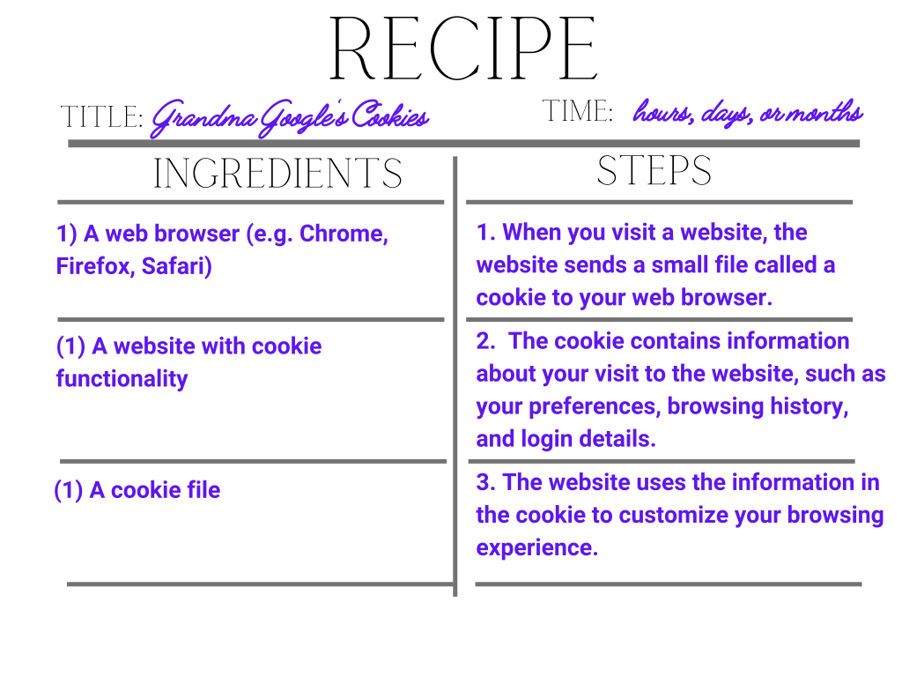

Keeping Your Data Safe: Tips and Tools for Privacy Awareness
Introduction to your data, for you
Take a second to think of every website, online store, app, platform, or service you have given a phone number or email to. When was the last time you read the Terms of Services?
If your answer is "never," don't worry - you're not alone. In fact, studies estimate that over 91% of people consent to Terms of Service without ever reading them. For younger people between the ages of 18 and 34, this number is even higher, at 97% [1]. This means that the vast majority of us are blindly agreeing to terms that we may not fully understand, potentially putting our online privacy and security at risk.
Online privacy doesn't have to be complicated, intimidating, or burdensome. This guide is designed to provide you with a simple and straightforward understanding of what online privacy is, why it matters, and how you can take steps to protect yourself. You'll find practical recommendations and tools that can help you improve your privacy and regain control over your data.
We all probably close and lock the door behind us when we leave home so no one comes into our home and rummages through our possessions, we all probably use headphones when we’re listening to an embarrassing song in public, and we all probably prefer if our doctor doesn’t live Tweet our medical appointments.
Privacy is a concept that we regularly practice and value in our daily lives, and it has been explored and discussed for millenia by philosophers, legal scholars, sociologists, and technologists. However, online privacy differs slightly from the way we typically practice privacy in our offline lives. Online privacy is less about what we are doing and more about who we are and what we are doing. It's about protecting our digital identity and personal information from being accessed or misused by others on the internet [2].
There are two interpretations of privacy:
Privacy is the right to be left alone
Sed lorem amet ipsum dolor et amet nullam consequat a feugiat consequat tempus veroeros sed consequat.
Control over personal information
Sed lorem amet ipsum dolor et amet nullam consequat a feugiat consequat tempus veroeros sed consequat.
How has online privacy changed?
In recent years, there has been a significant shift in public perception around privacy practices of companies. With increasing public awareness around data breaches, online tracking, and targeted advertising, people are becoming more concerned about how their personal information is being collected, used, and shared.
2000-2004: Emergence of the Digital Age
In the early days of the internet, data privacy concerns were minimal. Companies, like Google, processed data collectively, rather than on an individual level. This meant that the information collected focused mainly on the search terms and clicked websites, rather than the users' browsing history, location data, or social media activity.
2005-2011: Data-Driven Advertising and Mobile Internet
As the number of internet users increased, companies began focusing more on individual data collection. Facebook and Google were among the first to realize that individually processed data could be used more effectively for advertising purposes. Smartphones and social media provided new opportunities for tracking and advertising. However, with these developments came the first instances of major data breaches.
2012-2017:Increase in Data Breaches and Decrease in Trust
Over the years, data breaches have become more frequent and extensive. Between 2012 and 2017, there were over 130 data breaches, with the largest being Yahoo's breach that affected three billion accounts in 2013. In total, over 4.5 billion records were compromised in just five years, and up to one in three Americans experienced a data breach every year.
2018-Present: Stricter Data Protection Laws
After two decades of widespread internet use, people and governments have come to recognize the criticality of safeguarding personal data [1]. Over 80 countries have implemented privacy and security laws related to the internet, and both companies and governments are striving to improve the subpar standards left over from the internet's early days.
Why is privacy important?
Take a second to think about what you would share with a random stranger. Would you share your medical records, bank statements, or your shopping history? Whenever we go online, we leave a digital footprint that can be used to identify our preferences, habits, and interests. And that typical digital footprint is massive - we create and leave behind massive amounts of data each day. Each time we visit a website, watch a video, or swipe a screen, we transform our actions into data. The more information we share, the more companies or governments can aggregate data to represent you as an individual.
In recent years, there have been numerous high-profile privacy breaches across many sectors. Every year, breaches do not only become more frequent, they also become larger. These incidents illustrate how vulnerable our personal information is and how easily it can be exploited.
It is essential to understand that privacy breaches can happen to anyone, and the risks increase when we have multiple online accounts. The more accounts we have, the higher the risk someone can use compromised login credentials to gain access to multiple accounts, steal sensitive data, and cause irreparable damage to our online reputation.
Can you guess how many online accounts an average American has?
What are companies collecting about you
Anytime you agree to a Terms of Service, you agree to share information and data about yourself. So what are companies collecting and using?
How do companies compare with each other?
Common Sense Privacy Evaluations is a comprehensive privacy evaluation system for websites, apps, and platforms used by children and families. The system employs a standardized evaluation process that assesses the privacy practices of websites, apps, and platforms across multiple categories, such as data collection, third-party sharing, and privacy policies. The privacy evaluations result in a score on a scale of 1-100, with higher scores indicating better privacy practices.
Select the companies that you use and compare their scores.
Taking back control of your data
Remember our earlier definitions of privacy? The right to be left alone and the right to have control over your data are at the cornerstone of what privacy is. This section includes information on your rights to your data as a California resident and steps to improve your privacy online.
Knowing your rights
Privacy is considered a fundamental human right that is protected by various governments and international organizations. It allows individuals to have control over their personal information and to maintain their dignity and autonomy. Governments have implemented privacy laws and regulations to safeguard individuals from unlawful or unauthorized collection, use, and disclosure of their personal information.
If you reside in California, regulation guarantees that you have enforceable privacy rights:
The right to know about the personal information a business collects about you and how it is used and shared
The right to delete personal information collected from you
The right to opt-out of the sale or sharing of your personal information
The right to correct inaccurate personal information that a business has about you
The right to limit the use and disclosure of sensitive personal information collected about you
The right to non-discrimination for exercising your CCPA rights
Steps to take to improve your privacy
It may seem like there is no way to prevent companies and governments from using your data, and that privacy is a battle won and fought in court cases and litigation. That’s far from true! You can take steps to ensure that your data remains under your control. Here are some immediate ways to improve your privacy online.
Limit who tracks you
Knowing how companies track users online is important because it can have significant implications for one's privacy and security. Companies can collect data on users' browsing habits, search history, and personal information, which can be used for targeted advertising, identity theft, and other nefarious purposes.
To pay attention to cookies, one can adjust their browser settings to control cookie usage, delete cookies regularly, and use private browsing modes. It's also important to be aware of the types of cookies that websites use, such as first-party and third-party cookies, and what they do.
Using ad blockers can also be a useful tool for protecting one's privacy online. Ad blockers can prevent websites from displaying ads, which can often be a source of tracking cookies and other types of tracking scripts. However, it's important to note that some websites rely on ad revenue to function, so it's important to be selective when using ad blockers and whitelist websites that you trust.

Have a strong password
A strong password makes it much more difficult for an attacker to gain access to your accounts, even if they manage to obtain your username or email address. With the increasing number of data breaches and cyber attacks, it is more important than ever to use strong and unique passwords for each of your online accounts to minimize the risk of your personal and financial information being compromised.
Over 21 million people use "password" as their password. Click the button below to see how to improve the strength of that password.
Password
Know what you're agreeing to
Understanding the terms of service is important because it allows you to know what data the company is collecting from you, how they will use it, and who they may share it with. It might be impossible to fully understand the details of every terms of service, it is important to be aware of what is being collected and what rights you have to your data. Consider using tools, like CommonSense, to evaluate the safety and privacy of your data.